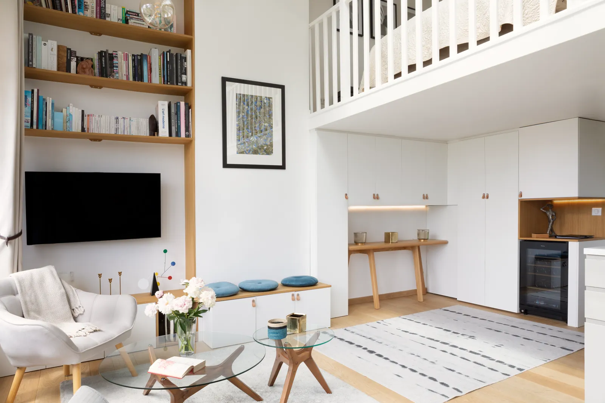
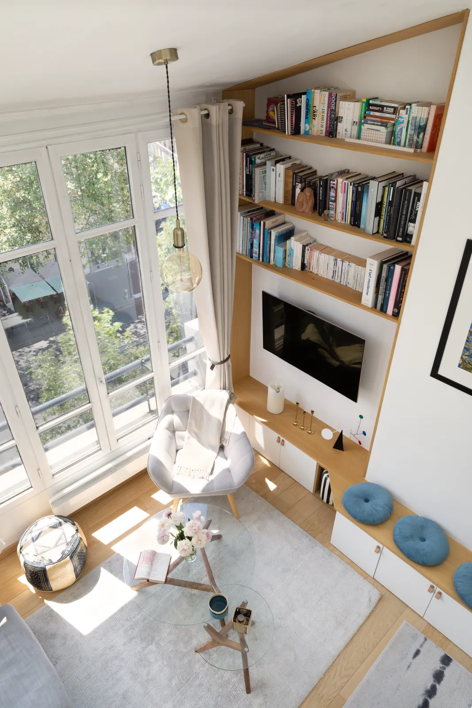
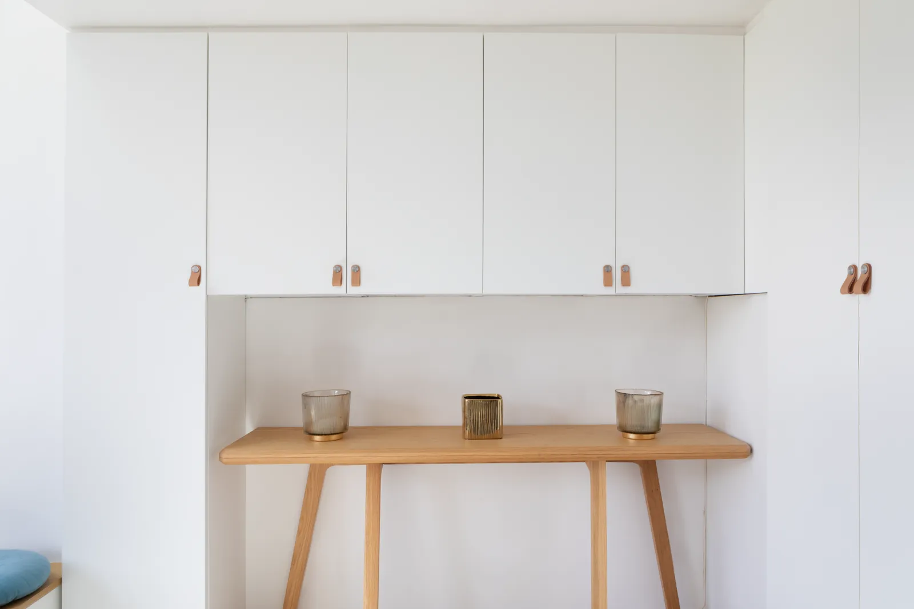
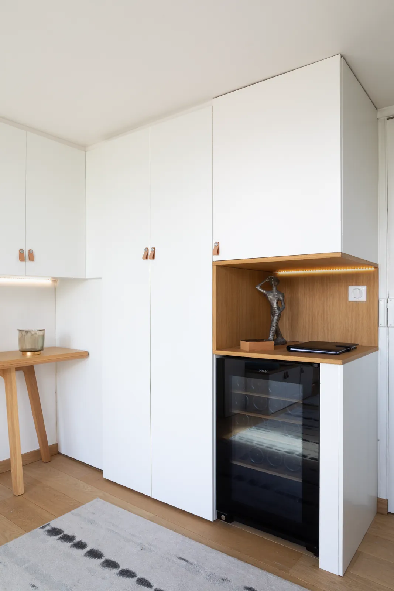
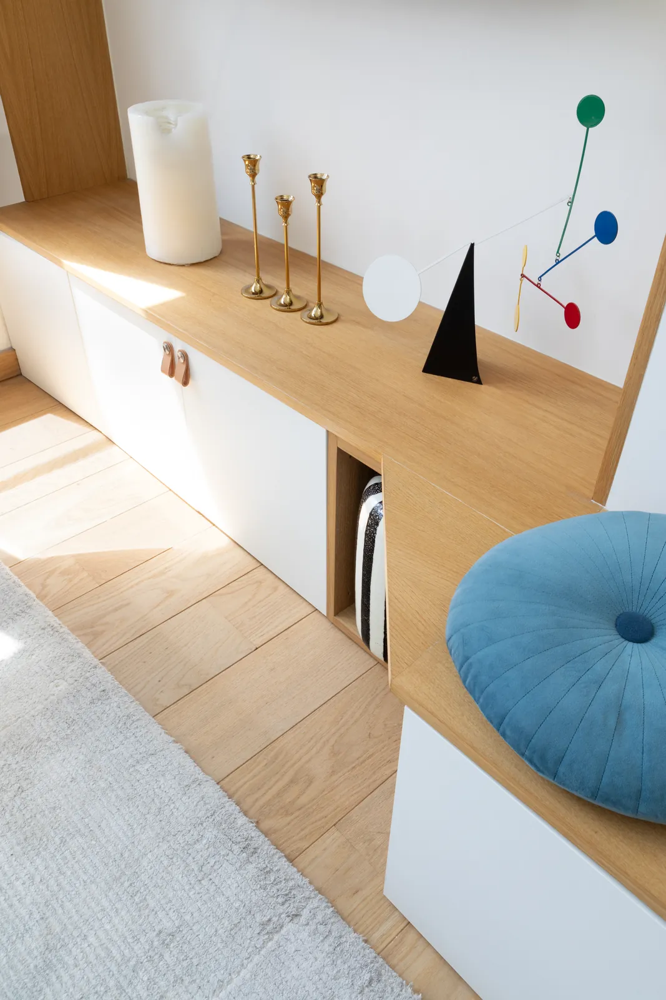

Stouls Studio / Portfolio / Appartement Montparnasse
Appartement Montparnasse
- Type de bien
- Appartement
- Lieu
- Paris, 6e arrondissement
- Surface
- Environ 45 m²
- Usage
- Pied-à-terre
- Intervention du studio
- Rénovation partielle du séjour et création de la bibliothèque, avec suivi de chantier





